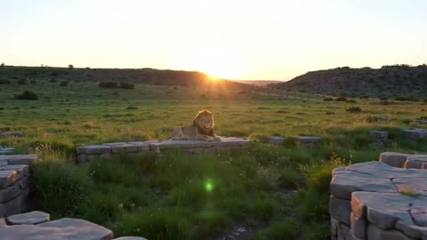
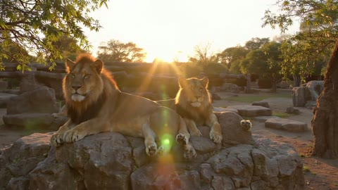
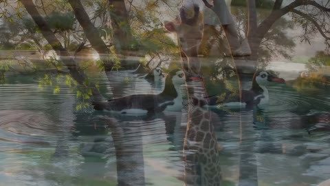
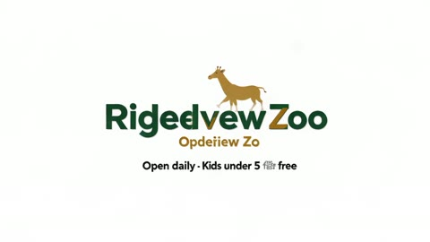

V4 vs the Magic Hour MCP
Generated 2026-11-03 05:29 UTC from V4/runs/full-*/run.json, V4/runs/dry-*/run.json, V2/bench/v1/results/mcp-v4, mcp-barber, mcp-intent, compare-verdicts.json, barber-scores.json.
Two agents given the same briefs and the same attachments on Magic Hour's free tier (480p / 640px). V4 is our agentic pipeline (intake sheet, deterministic guards, one call per clip, VLM review, ffmpeg tools, TTS). MCP is a stock GPT chat model (gpt-6.1-sol) with only Magic Hour's MCP tools. Everything on this page is computed from the run records; file paths are given so each number can be checked.
| Block | V4 credits | V4 wall s | MCP credits | MCP wall s | Verdict |
|---|---|---|---|---|---|
| 13 simple briefs (first pass; S10 = start-frame run) | 848 | 502 | 853 | 588 | V4 5 · MCP 7 · tie 1 |
| S10 rerun, two references | 240 | 171 | — | — | by eye: the car crosses the bridge, same mechanism as the MCP's |
| Zoo ad (V03) | 1,810 | 284* | 1,080 | 212 | V4 on lettering, narration, three distinct scenes; MCP's lions the better shot |
| Barber seed (B01, shared by both sides) | 240 | 74 | — | — | |
| Barber continuations (informed + blind) | 480 | 168 | 480 | 479 | informed: MCP 81 / V4 58 · blind: 38 / 38 |
| Total | 3,618 | 1,198 | 2,413 | 1,279 |
* The zoo's run.json has no finished stamp; 284 s is the final (four-call) pass from its at to the record's write time. The two earlier passes are not timed end to end in the record (the first crashed on an HTTP 502 at clip 3 after about 159 s). See section 6.
1b · Where the two differ structurally
On a single generation call the two agents are the same thing: the same model, the same endpoint, one prompt. The places they differ are structural, and these six are where the runs on this page show it.
| Difference | What the runs show | Evidence | Can be improved by us |
|---|---|---|---|
| Anything after the generation: trim, join, overlay, voice, mix | S07 “trim to 6 s”: V4 ran ffmpeg (0 cr, 8.6 s); the MCP made nothing and printed an ffmpeg command for the user to run. Zoo end card and offer line: ours is a qwen still carried into its own 5 s clip, lettering exact; theirs is asked for “EXACTLY” inside a 45 s video prompt and comes out as “Rigedvew Zoo / Opdeiiew Zo”. | S07 card · end cards at 43 s · zoo.html · compare-mcp.html | already does |
| Narration longer than a sentence | Zoo: V4 speaks the whole 39.3 s script as TTS mixed under the joined film; the MCP's single ltx-2.5 call compresses four timed voice-over lines into about 9 s of speech at the start, then silence (transcripts in V4/RESULTS.md and section 4). | narration transcripts · full-V03/narration.mp3 · V2/sessions/mcp-mv4-MV03/assets | already does |
| Several distinct scenes in order | Zoo: four calls kept lions, penguins, giraffe and card separate; the MCP's one 45 s call double-exposed penguins and a giraffe at 27 s and folded the third scene into the second. The MCP's lions remain the better single shot. | frames at 3/15/27/40 s · zoo.html | already does |
| Reading its own output | The MCP cannot extract a frame or look at a result: on the barber it asked the user for a still of the last frame (“I can't extract the attached clip's final frame”), and it never reviews what it delivered (zoo: “I haven't verified the rendered content”). V4 extracts last frames, reviews every clip with a VLM and keeps a per-run state record in run.json (story, each clip's reference, prompt, last frame, review). Honest limit: that record is per run; there is no cross-run memory yet. | barber · V2/bench/v1/results/mcp-barber/MB02.json dialog · full-V03/run.json result.clips | already does (per run); cross-run memory not yet |
| Deterministic edits at 0 credits | S05 “warmer”: both sides sent the photo to qwen-image-2.1 (10 cr each) and both re-rendered the picture rather than adjusting it; V4's own review failed it for that reason even though the verdict went to V4. A tone-only edit should be an ffmpeg colour filter at 0 credits, as the trim already is. | S05 card · V4/RESULTS.md finding 2 | not yet (a gap on our side too) |
| Asking before spending | From the dry runs V4 asked “where will it be posted”, “which words, exactly”, “how long”, “silent or with sound” in 9 of 13 vague briefs, at 0 credits, and its rule forbids drafting copy the user did not give (S03-strange tightened this). In the MCP intent run (13 of 13 items recorded) it asked a question in 3 items and attempted a paid call straight from the one-liner in 10. | section 1 · transcripts.html · V2/bench/v1/results/mcp-intent | already does |
1 · The user is vague but has an intention
The same thirteen briefs, but given as the vague one-liner a real user types, with a proxy answering the agent's questions from a fixed answer sheet (V4/tests/items/<ID>.json: vague, answers). V4's side is its dry suite (V4/runs/dry-*/run.json: 0 credits, the conversation and the final sheet). The MCP's side is V2/bench/v1/results/mcp-intent/I*.json: the same vague brief and answer sheet, with every paid call refused by a gate (item cap 0) so that the call it attempted is recorded instead. The question: who asked for what it could not know, and whose call matches the answers (aspect from “where will it be posted”, the exact words, the seconds, the sound)?
13 of 13 MCP intent records present.
Hits and misses
Expected values come from the answer sheet: “Instagram feed” → 1:1 (4:5 accepted), “TikTok” → 9:16, “YouTube” / “homepage banner, wide” / “LinkedIn, landscape” → 16:9, “A4 flyers” → 3:4 (2:3 or 9:16 accepted as the nearest tall grid). “n/a” means the answer sheet does not fix that field. For V4, “not in sheet” means the tool's intake sheet has no aspect field at all (edit_image, create_video_from_image): the brief-writer then relies on the attached picture's shape, which is a real gap for S01, S10, S11 and V02 where the user named a destination.
| Item | Vague brief and the answer sheet | V4 asked | V4 aspect | words | seconds | sound | MCP asked · attempted | MCP aspect | words | seconds | sound |
|---|---|---|---|---|---|---|---|---|---|---|---|
| S01 Product shot from the user's photo |
“I need a shot of my perfume for the website” answers: where: the homepage banner, wide · change: put it on white marble with soft studio light · keep: the bottle exactly as it is |
asked nothing tool edit_image · evaluator: pass |
no not in sheet | n/a | n/a | n/a | asked nothing attempted (no call attempted) |
no not set | n/a | n/a | n/a |
| S02 Product shot from words only |
“a product shot of a matte black water bottle” answers: where: Instagram feed · look: premium, minimal |
· Where will you use the image, or would you like it square, portrait, or landscape? tool generate_image · evaluator: pass |
yes 1:1 | n/a | n/a | n/a | asked nothing attempted (no call attempted) |
no not set | n/a | n/a | n/a |
| S03 Poster with exact words |
“make a poster for our open mic night” answers: words: Open Mic Night · Friday 7pm · The Blue Door · where: printed A4 flyers · look: warm, a bit retro |
· Should any words appear on it? If so, which, exactly? · Will this be a tall printed poster, a square post, a tall story, or a wide banner? tool generate_image · evaluator: fail |
yes 3:4 | yes | n/a | n/a | · Sure—what should the poster include?
- **Event name** (or just “Open Mic Night”)
- **Date and time**
- **Venue/location**
- **Entry fee or signup details**, if any
Have a style in mind—cozy café, bold retro, or neon stage? If not, I’ll pick one. attempted (no call attempted) |
no not set | no | n/a | n/a |
| S04 Sale post, then a change of direction |
“a social post announcing 20% off” answers: where: Instagram feed · words: 20% OFF · This weekend only · look: bold, red and white |
· Where will you post it—a square feed post, a tall story, or a wide banner? · Should any words appear on it? If so, which, exactly? tool generate_image · evaluator: pass |
yes 1:1 | yes | n/a | n/a | asked nothing attempted (no call attempted) |
no not set | no | n/a | n/a |
| S05 Make it warmer |
“make this photo warmer” answers: keep: everything else exactly |
asked nothing tool edit_image · evaluator: pass |
n/a | n/a | n/a | n/a | asked nothing attempted (no call attempted) |
n/a | n/a | n/a | n/a |
| S06 Remove the crowd |
“remove the people from this” answers: keep: the car and everything else exactly |
asked nothing tool edit_image · evaluator: pass |
n/a | n/a | n/a | n/a | asked nothing attempted (no call attempted) |
n/a | n/a | n/a | n/a |
| S07 Trim a clip |
“cut this down” answers: range: keep the first 6 seconds |
· Which part should I keep? You can give start and end times or describe the moment. tool trim_video · evaluator: pass |
n/a | n/a | yes | n/a | · How short do you want it, and which part should I keep? You can give timestamps, like “keep 0:03–0:08.” attempted (no call attempted) |
n/a | n/a | no | n/a |
| S08 Face swap on a photo |
“put the one guy's face on the other” answers: which: the teacher's face (the man in the grey shirt) onto the man with braids |
· Should I put the crouching man’s face onto the man with crossed arms, or the other way around? tool swap_face_in_photo · evaluator: pass |
n/a | n/a | n/a | n/a | · Which way around—put the first guy’s face on the second guy’s body, or the second guy’s face on the first? attempted (no call attempted) |
n/a | n/a | n/a | n/a |
| S09 Animate a portrait |
“make a short clip of her” answers: motion: she smiles and looks around a little, nothing dramatic · length: 6 seconds · sound: silent |
· What would you like her to do in the clip? · Should it be silent, have background sounds, or have music? tool create_video_from_image · evaluator: pass |
n/a | n/a | yes | yes | asked nothing attempted (no call attempted) |
n/a | n/a | no | no |
| S10 Two pictures, one reference slot: car on the bridge |
“a video of this car driving across this bridge” answers: where: YouTube · length: 10 seconds · sound: silent |
· How long would you like the video to be? · Would you like it silent, with driving sounds, or with music? tool create_video_from_image · evaluator: pass |
no not in sheet | n/a | yes | yes | asked nothing attempted (no call attempted) |
no not set | n/a | no | no |
| S11 Two pictures, one reference slot: poster on a billboard |
“put my poster on a billboard by this bridge” answers: where: a LinkedIn post, landscape · keep: the poster exactly as designed |
asked nothing tool edit_image · evaluator: pass |
no not in sheet | n/a | n/a | n/a | asked nothing attempted (no call attempted) |
no not set | n/a | n/a | n/a |
| V01 One clip, text only |
“a clip of waves at sunset for my meditation app” answers: where: TikTok · length: 10 seconds · sound: gentle ambient wave sound |
· Will the clip fill a tall phone screen, a wide screen, or a square area in your app? · How many seconds should the clip last? · Would you like ocean sounds, music, or a silent clip? tool create_video_from_text · evaluator: fail |
yes 9:16 | n/a | yes | yes | asked nothing attempted (no call attempted) |
no not set | n/a | no | no |
| V02 One clip, one reference |
“animate this” answers: motion: a slow turn on the spot with light moving across the glass · length: 6 seconds · sound: silent · where: Instagram feed |
· How would you like the perfume bottle to move—for example, a slow turn or a gentle floating motion? · How long should the video be? · Should it be silent, have music, or have background sounds? tool create_video_from_image · evaluator: pass |
no not in sheet | n/a | yes | yes | asked nothing attempted (no call attempted) |
no not set | n/a | no | no |
V4 reading, from the dry suite: it asked in 9 of 13 items, never more than two turns, and every question maps to a key on the answer sheet (it never asked for something already in the brief). It asked nothing in four (S01, S05, S06, S11): for S05 and S06 the answer sheet had nothing it could not infer; for S01 and S11 it skipped “where will this go” and so lost the 16:9 the user had in mind. On S10 and V02 it asked length and sound but not the destination, and its image-to-video sheet has no aspect field to put the answer in. The transcript evaluator (V4/runs/transcript-evals.json, with the attachment readings supplied) gave the 13 plain dry runs 11 pass / 2 fail; both fails are a look chosen without asking (S03: “bold, welcoming” when the user would have said “warm, a bit retro”; V01: “naturalistic”), which our rule allows as a stated default and the evaluator does not.
Four conversations
S03 · Poster with exact words (what the user had in mind: A poster for an open mic night, printed A4 (3:4), warm retro look; the words must read exactly: 'Open Mic Night', 'Friday 7pm', 'The Blue Door'.)
| subject | A poster for an open mic night | user |
| aspect | 3:4 | derived |
| exact_words | ["Open Mic Night · Friday 7pm · The Blue Door"] | user |
| look | Bold, welcoming live-performance poster style | default |
V4 said: “I’ll make a bold, welcoming open mic poster with your exact wording, using the closest supported tall format to A4. It may need a slight crop when printed on A4.”
{
"tool": "(no call attempted)",
"prompt": ""
}MCP said: “I couldn’t generate the poster because your Magic Hour account has **0 credits**; this design needs about **10 credits**. Here’s the copy I prepared, with free entry and door signup as my choices: **OPEN MIC NIGHT** **FRIDAY · 7PM** **THE BLUE DOOR** Music · Poetry · Comedy **FREE ENTRY** Sign up at the door The design direction is warm retro: cream paper, burnt orange and mustard accen”
S10 · Two pictures, one reference slot: car on the bridge (what the user had in mind: A 10-second widescreen (16:9) silent clip of this car (attached) driving across this bridge (attached), seen from the roadside, morning light.)
| motion | The pictured light blue and black Bugatti drives across San Francisco’s red-orange Golden Gate Bridge, with blue water below and green hills under a clear blue sky. | user |
| seconds | 10 | user |
| sound | none | user |
| keep | Preserve the Bugatti’s light blue and black colors, design, and proportions. | default |
V4 said: “I’ll make a silent, 10-second video of your pictured Bugatti driving across the Golden Gate Bridge, preserving the car’s light blue and black appearance.”
{
"tool": "(no call attempted)",
"prompt": ""
}MCP said: “I couldn’t generate the video because your Magic Hour account has **0 credits remaining**. The 5-second clip needs about **120 credits**. Once you add credits, I can try again using both photos as references.”
V01 · One clip, text only (what the user had in mind: A 10-second vertical (9:16) clip for a meditation app: slow waves at sunset on an empty beach, a gentle camera drift, with the natural sound of the waves, no music, no words.)
| subject | Waves at sunset for a meditation app | user |
| seconds | 10 | user |
| aspect | 9:16 | default |
| sound | ambient | user |
| exact_words | [] | derived |
| look | Naturalistic | default |
V4 said: “I’ll make a naturalistic 10-second clip of waves at sunset with gentle ambient wave sounds. I’ll use a tall, vertical format suited to TikTok.”
{
"tool": "(no call attempted)",
"prompt": ""
}MCP said: “I couldn’t generate the clip because your Magic Hour account has **0 credits**; this 5-second video needs about **120 credits**. The clip is planned with gentle waves, warm sunset colors, a steady camera, and soft surf sounds. Add credits to proceed. Commercial use in your app also requires a paid subscription or credit purchase.”
S01 · Product shot from the user's photo (what the user had in mind: Put this perfume bottle (attached) on a white marble surface with soft studio light, a wide 16:9 banner for the website homepage; keep the bottle exactly as it is, no text.)
| edit | Polish the attached perfume photograph into a clean website product shot with balanced lighting and a clean white background. | derived |
| keep | Preserve the bottle’s shape, pale pink color, silver spray nozzle, and hanging tag with its existing text. | default |
| exact_words | [] | derived |
V4 said: “I’ll turn your attached perfume photo into a clean, website-ready product shot while preserving the bottle’s design and details.”
{
"tool": "(no call attempted)",
"prompt": ""
}MCP said: “I couldn’t generate the product shot because your Magic Hour account has **0 credits**; this edit needs about **10 credits**. No image was created. The planned look is a soft ivory background, crisp glass and silver details, and a subtle shadow—keeping your bottle centered and unchanged. Once credits are available, I can create it.”
All nineteen V4 dry transcripts, including the strange-answer and direction-change variants: transcripts.html.
2 · Thirteen simple briefs
The full briefs, one attempt each, no retries, both sides on the free tier. V4's S10 shown here is its first run (start frame from the car photo), which is the run the verdicts scored; the rerun is in the next section. Verdicts: a VLM shown the two results in random order (V4/runs/compare-verdicts.json); S07 is V4 by default because the MCP has no trim tool. Full intermediates and prompts: compare-mcp.html, outputs.html.
| Item | V4 tool | V4 cr | V4 s | MCP tool | MCP cr | MCP s | Verdict |
|---|---|---|---|---|---|---|---|
| S01 Product shot from the user's photo | edit_image qwen-image-2.1 | 10 | 41.8 | edit_image qwen-image-2.1 | 10 | 31 | MCP, slight |
| S02 Product shot from words only | generate_image qwen-image-2.1 | 10 | 28.1 | generate_image flux-2-klein | 5 | 26 | MCP, clear |
| S03 Poster with exact words | generate_image qwen-image-2.1 | 10 | 34.4 | generate_image qwen-image-2.1 | 10 | 31 | MCP, clear |
| S04 Sale post, then a change of direction | generate_image qwen-image-2.1 | 10 | 30.8 | generate_image qwen-image-2.1 | 10 | 31 | V4, clear |
| S05 Make it warmer | edit_image qwen-image-2.1 | 10 | 31.7 | edit_image qwen-image-2.1 | 10 | 31 | V4, clear |
| S06 Remove the crowd | edit_image qwen-image-2.1 | 10 | 28.5 | edit_image qwen-image-2.1 | 10 | 31 | MCP, clear |
| S07 Trim a clip | trim_video | 0 | 8.6 | — | 0 | 14 | V4, by default |
| S08 Face swap on a photo | swap_face_in_photo | 10 | 11.9 | swap_face_in_photo | 10 | 28 | tie, clear |
| S09 Animate a portrait | create_video_from_image ltx-2.5 | 144 | 51.1 | create_video_from_image ltx-2.5 | 144 | 43 | MCP, clear |
| S10 Two pictures, one reference slot: car on the bridge | create_video_from_image ltx-2.5 | 240 | 63.6 | create_video_from_text minimax-h3 | 240 | 158 | MCP, decisive |
| S11 Two pictures, one reference slot: poster on a billboard | edit_image qwen-image-2.1 | 10 | 51.6 | edit_image qwen-image-2.1 | 10 | 39 | MCP, clear |
| V01 One clip, text only | create_video_from_text ltx-2.5 | 240 | 65.9 | create_video_from_text ltx-2.5 | 240 | 60 | V4, slight |
| V02 One clip, one reference | create_video_from_image ltx-2.5 | 144 | 54.1 | edit_image + create_video_from_image qwen-image-2.1 + ltx-2.5 | 154 | 65 | V4, clear |
| Total | 848 | 502 | 853 | 588 | V4 5 · MCP 7 · tie 1 |
Same tool on nine of thirteen. The items the MCP won were decided by prompts (S02, S03, S06, S11: its image prompts restate the request's nouns first) and one routing choice (S10). V4 won where its prompt or a deterministic tool was the better fit (S04, S05, V01, V02, S07).
Equal by construction. On a single-call generation the two sides are the same model and the same call; only the prompt and the routing differ. The MCP's image prompts were judged better on 4 of 13 (S02, S03, S06, S11) and its routing on one (S10, since fixed). We do not claim to beat it on single calls; the differences that matter are the structural ones in section 1b.
S01 · Product shot from the user's photo MCP, slight
Put this perfume bottle (attached) on a white marble surface with soft studio light, a wide 16:9 banner for the website homepage; keep the bottle exactly as it is, no text.


The second image has slightly crisper bottle details and a convincing reflection on the marble, giving it a more polished homepage-banner finish. Both provide a wide, text-free composition with soft studio lighting, but the second integrates the bottle with the surface more naturally.
S02 · Product shot from words only MCP, clear
A product shot of a matte black insulated water bottle on a pale concrete surface, soft studio light, premium minimal look, square 1:1 for the Instagram feed, no text.


The first image better matches the requested soft studio lighting and premium minimal look, with an understated background and a believable matte black bottle on pale concrete. Both are square and text-free, but the second’s dramatic spotlight and dark background make it less faithful to the brief.
S03 · Poster with exact words MCP, clear
A poster for an open mic night, printed A4 (3:4), warm retro look; the words must read exactly: 'Open Mic Night', 'Friday 7pm', 'The Blue Door'.


Both reproduce all three required phrases correctly, but the second has a more cohesive warm retro design and an inset poster much closer to the requested 3:4 proportions. Its surrounding blank space would need cropping for printing, whereas the first poster’s unusually tall layout would require more substantial reformatting.
S04 · Sale post, then a change of direction V4, clear
A bold red-and-white square image for the Instagram feed announcing a sale; the words must read exactly '20% OFF' and 'This weekend only'.


The first image delivers the exact requested wording in a bold, readable red-and-white square with a clean, intentional layout. The second also has the correct text, but its stray marks and cropped white shape in the upper-right corner make it look unfinished and less usable.
S05 · Make it warmer V4, clear
Make this photo warmer in tone (golden, like late afternoon light); change nothing else: same person, pose, framing and background.


The first result delivers the requested golden, late-afternoon warmth, while the second remains comparatively neutral in the skin, sweater, and background. Although the first is somewhat heavily yellow-tinted, it fulfills the central tonal change more convincingly.
S06 · Remove the crowd MCP, clear
Remove all the people from the background of this photo and fill the background in naturally; the car and everything else stay exactly as they are.


The second result removes the people while retaining a more believable, detailed background, including the building, fence, and paths. The first appears to replace much more of the surroundings with a simplified landscape, making it less faithful to keeping everything else unchanged.
S07 · Trim a clip V4, by default
Trim this clip to the first 6 seconds (0 to 6).
The MCP has no trim tool and made nothing; it printed an ffmpeg command for the user to run.
S08 · Face swap on a photo tie, clear
Put the face of the man in the grey long-sleeve shirt onto the man with braids in the other photo; keep the braids photo as the scene.


The two results appear visually identical, with the same face, braids, clothing, pose, and background preserved. Neither has a discernible advantage in face blending, believability, or fidelity to the requested scene.
S09 · Animate a portrait MCP, clear
Animate this portrait for 6 seconds: she smiles and looks around a little, nothing dramatic; keep her face exactly like her; silent.
The second keeps the portrait framing stable and shows restrained head turns and a gentle smile, better matching the requested subtle animation. The first introduces a substantial close-up and more noticeable facial-proportion changes, making it less faithful to the original portrait.
S10 · Two pictures, one reference slot: car on the bridge MCP, decisive
A 10-second widescreen (16:9) silent clip of this car (attached) driving across this bridge (attached), seen from the roadside, morning light.
The first shows the silver-blue car driving on the bridge in warm morning light, with believable wheel blur and widescreen framing. The second keeps the car parked on a display platform with the bridge behind it, missing the requested driving action and location.
S11 · Two pictures, one reference slot: poster on a billboard MCP, clear
Put this poster (attached) on a roadside billboard with this bridge (attached) behind it, landscape 16:9 for a LinkedIn post; the poster must stay exactly as designed, readable.


The second better preserves the poster’s portrait proportions and places it believably beside a road with the bridge behind it, while the first stretches the artwork into a wide format. Both provide a landscape composition, but neither fully meets the exact-design and readability requirement because the poster’s smaller text is visibly garbled.
V01 · One clip, text only V4, slight
A 10-second vertical (9:16) clip for a meditation app: slow waves at sunset on an empty beach, a gentle camera drift, with the natural sound of the waves, no music, no words.
The second result has more convincing foam, wet-sand detail, and subtle framing changes consistent with a gentle camera drift, while retaining the empty sunset beach and text-free vertical composition. Both look suitable for meditation, but the supplied frames cannot verify the 10-second duration or the required waves-only audio.
V02 · One clip, one reference V4, clear
Animate this perfume bottle (attached) for 6 seconds: a slow turn on the spot with light moving across the glass, the bottle exactly as in the picture, square, silent.
The first gives a cleaner, larger product view with a believable turn and changing glass highlights, while the second adds an unrequested picture-frame border and excessive padding. Although the second meets the square-format requirement better, the first is more faithful to a straightforward perfume animation and more usable as product footage.
3 · S10, the car on the bridge, three ways
A 10-second widescreen (16:9) silent clip of this car (attached) driving across this bridge (attached), seen from the roadside, morning light.
First run · start frame
create_video_from_image on ltx-2.5, the car photo as the start frame, the bridge named in words. 240 cr · 63.6 s wall. The bridge never appears: whatever is in a start frame persists, so the show stand and crowd stayed. VLM review: fail. The one-reference rule's known cost.
Rerun · two named references
create_video_from_text on minimax-h3 with @product (car) and @environment (bridge) as named references: “use references as likeness guides, not pasted photos … discard display platform, crowd and original setting.” 240 cr · 170.7 s wall (the minimax job alone 120 s). By eye: the Tourbillon's body, ice-blue and black, crosses the Golden Gate, front three-quarter to rear three-quarter, towers and cables behind. The reviewer still flagged motion (it wants continuous position change past a fixed camera).
MCP · first try
create_video_from_text on minimax-h3, @car and @bridge as named references, “no crowds or exhibition platform from the car reference”. 240 cr · 158 s. The clip the verdict called decisive. Our rerun uses the same mechanism; the rule change that allowed it: small tasks may carry two references into a video call (not into an image edit).
Frames at 0.5 / 3 / 6 / 9.5 s for all three: s10.html.
4 · The zoo ad: stability over 45 seconds
Brief. A 45-second widescreen (16:9) YouTube ad for Ridgeview Zoo in three clips with a warm, friendly voice-over: lions at dawn, then penguins being fed, then giraffes at the treetops; end on a clean logo card that reads exactly 'Ridgeview Zoo' in green and gold with a simple antelope mark and the line 'Open daily 9–5 · Kids under 5 free'. The voice-over invites families to visit this weekend.
Why this is the headline example. A 45 s piece with three scenes in a fixed order, a voice-over and an exact end card is where the two designs differ most. V4 wrote a story (setting + one paragraph per clip), grouped the clips into four calls (lions 15 s, penguins 15 s, giraffe 10 s, end card 5 s from a generated still), joined them with ffmpeg and mixed a 39.3 s TTS narration under. The MCP made one 45 s ltx-2.5 call with audio on and the narration quoted inside the prompt (its first attempt exceeded the 2,000-character prompt limit and was refused; it shortened and retried, 7 calls in all).
V4 · film-voiced.mp4 · 45.2 s

MCP · one 45 s call · 45.0 s


End cards (frame at 43 s)

Narration
V4 · TTS (alloy), 39.3 s, the whole script, mixed under the film (full-V03/narration.mp3):
This weekend, trade the everyday for a little wonder at Ridgeview Zoo. Start with golden morning light, a magnificent lion, and that lovely feeling of discovering something together, right here with the people you love. Then meet our penguins at feeding time, where quick little steps become a splash of excitement. There are curious faces, wonderful discoveries, and plenty of moments your family will be talking about all the way home. Look up, and share a treetop moment with our giraffe. Make this weekend a family adventure at Ridgeview Zoo. We're open daily, nine to five, and kids under five are free. Come explore together this weekend.
MCP · what is audible in its film: about 9 s of compressed speech at the start, then nothing (transcription in V4/RESULTS.md):
This weekend, make room for wonder. Start your day with lions, meet penguins, at feeding time, and look up at our giraffes. Bring your!
What it asked the model to say, inside the prompt: four voice-over lines timed 0–12, 12–24, 24–36, 36–45 s. ltx-2.5 squeezed them into the first seconds.
Scene by scene
| V4 | MCP | |
|---|---|---|
| Lions | lion on a sandstone ledge at sunrise, wide and small | lion and lioness on rocks at golden hour, close: the better shot |
| Penguins | two penguins at a pool, clean | penguins with a giraffe superimposed: a double exposure at 27 s (see the frame above) |
| Giraffe | giraffe at acacias, its own 10 s clip, review pass | folded into the penguin shot |
| End card | exact, held | garbled |
| Voice-over | 39.3 s, the whole script | about 9 s, then silence |
Credits and time
| V4 | MCP | |
|---|---|---|
| Generation credits in the film as delivered | 1,090 (clips 360 + 360 + 240 + 120, card still 10) | 1,080 |
| Credits actually spent (ledger) | 1,810 = first cut 1,090 (3 × 360 clips + 10 still) + second cut 360 (giraffe 240, card 120) + unintended 360 (clip 1 regenerated) | 1,080 (its first call was refused before spending) |
| Wall time | 284 s for the final pass; the first pass ran about 159 s before an HTTP 502 on clip 3; the second pass is not timed in the record | 212 s |
The overspend, stated plainly. The ledger shows 1,810 credits against 1,080 for the MCP. Of ours, 720 came after the first cut: 360 was the intended second cut (giraffe as its own clip 240, end-card clip 120, plus a 10 cr still) and 360 was unintended: the rerun regenerated clip 1 because the clip brief carried “CLIP n OF N” and N had changed from 3 to 4, which changed the prompt and so the job's cache key. The brief no longer carries the total. Calls in the record: clip-1 360, clip-2 360, clip-3-still 10, clip-3 360, clip-1 360, clip-3g 240, clip-4 120.
| Final cut | s | reference | sound | cr | review | file |
|---|---|---|---|---|---|---|
| clip 1 | 15 | none | narration | 360 | fail | clip-1.mp4 |
| clip 2 | 15 | none | narration | 360 | — | clip-2.mp4 |
| clip 3 | 10 | none | narration | 240 | pass | clip-3g.mp4 |
| clip 4 | 5 | generated-still (clip-4-still.png) | none | 120 | fail | clip-4.mp4 |
Every intermediate, prompt and review for both sides: zoo.html. The MCP's two prompts (the refused long one and the retry) are in V2/bench/v1/results/mcp-v4/MV03.json; the retry was 1681 characters.
5 · The barber reconnection
The story (V4/tests/barber-story.json), two clips. Setting: A small neighbourhood barber shop on a quiet weekday afternoon: one black leather chair in front of a wide mirror with round bulbs, a worn wooden counter with clippers, combs and a talc brush, a striped pole outside the front window, warm tungsten light inside and soft daylight from the window. Marcus, the barber, mid-forties, shaved head, grey beard, black apron over a white t-shirt. Dev, the customer, early twenties, in the chair with a black cape, short dark hair being finished into a fade. Clip 1: Marcus finishes the fade on Dev's right side with the clippers, steps back, tilts his head to check the line, then picks up the talc brush and dusts Dev's neck. Dev looks into the mirror. End on Marcus lifting the cape at Dev's shoulders, about to take it off. Clip 2 (the “lost” half): Marcus pulls the cape off with a flick and shakes it out. Dev stands, runs a hand over the fresh fade in the mirror and grins. Marcus holds up a hand mirror behind Dev's head so he can see the back; Dev nods, satisfied. They shake hands by the counter. End on Dev turning toward the door, Marcus already brushing down the chair.
Seed · B01 · 240 cr · 73.7 s
Clip 1 made by V4 as a 10 s text-to-video on ltx-2.5. Both sides were then given this clip and asked for the next 10 s: informed (the whole story attached) and blind (the clip only, “continue whatever is happening”).
Scores (V4/runs/barber-scores.json)
| Arm | Mechanism | cr | wall s | continuity | follows the paragraph | score |
|---|---|---|---|---|---|---|
| V4 informed | last frame of the seed extracted by ffmpeg, used as the start frame for ltx-2.5 image-to-video; the lost paragraph in the prompt | 240 | 88.9 | yes | partly | 58 |
| V4 blind | the same, with a VLM reading of three seed frames proposing the continuation | 240 | 79.2 | yes | no | 38 |
| MCP informed | asked for a still of the last frame (“I can't extract the clip's final frame”); on “your call” used minimax-h3 text-to-video with the whole seed video as @original | 240 | 294 | yes | partly | 81 |
| MCP blind | minimax-h3 with the seed video as @source, “continue whatever action is underway naturally” | 240 | 185 | yes | no | 38 |
The four continuations, stitched to the seed (20 s each)
V4 informed · score 58
Marcus adjusts the cape, presents a hand mirror, and brushes Dev’s shoulders while Dev stays seated and smiles, without the intended standing, handshake, or departure.


V4 blind · score 38
Marcus adjusts and smooths the cape around Dev’s shoulders while Dev remains seated facing the mirror, ending on a closer view of his fade rather than the intended reveal, handshake and departure.


MCP informed · score 81
Marcus removes the cape, presents a hand mirror while Dev remains seated and smiles, then brushes the chair as Dev turns toward the door, but the mirror reflection is incorrect and the hair-touching, nod and handshake are not evident in the supplied frames.


MCP blind · score 38
Marcus works around Dev’s neckline and adjusts the cape while Dev remains seated facing the mirror, without the standing, hand-mirror reveal, handshake, or departure.


Why the MCP's informed arm won. A video reference gives minimax-h3 the motion and the room, not one frozen pose. Our start frame (ltx-2.5 image-to-video from the last frame) locked Dev in the chair and the clip stayed there; the MCP's clip got the cape off, the hand mirror, and Dev turning to the door. Both blind arms reached 38: a continuation nobody described is a continuation of the pose, not of the story, which puts the story at 20–40 points. The MCP could not read the clip and said so (its dialog: “I can generate a **10-second, 16:9 silent continuation at 480p**, but I can’t extract the attached clip’s final frame or append footage with the available tools. Please attach a still of the **exact last frame** so I ca…”); our VLM read of the clip was accurate but the start-frame mechanism did not let that reading move the scene on. Consequence: add a video-reference route for “extend this clip” (minimax-h3 with the clip itself as a named reference, ≤ 15 s of it); keep image-to-video for stills.
Frames and prompts per arm: barber.html · stitched films: barber-stitched.html · the story page: barber-story.html.
6 · Time and cost
| Item | V4 credits | V4 wall s | V4 job s | MCP credits | MCP wall s | |
|---|---|---|---|---|---|---|
| S01 Product shot from the user's photo | 10 | 41.8 | 10 | 10 | 31 | |
| S02 Product shot from words only | 10 | 28.1 | 7 | 5 | 26 | |
| S03 Poster with exact words | 10 | 34.4 | 3 | 10 | 31 | |
| S04 Sale post, then a change of direction | 10 | 30.8 | 6 | 10 | 31 | |
| S05 Make it warmer | 10 | 31.7 | 10 | 10 | 31 | |
| S06 Remove the crowd | 10 | 28.5 | 6 | 10 | 31 | |
| S07 Trim a clip | 0 | 8.6 | 0 | 0 | 14 | MCP made nothing |
| S08 Face swap on a photo | 10 | 11.9 | 3 | 10 | 28 | |
| S09 Animate a portrait | 144 | 51.1 | 19 | 144 | 43 | |
| S10 Two pictures, one reference slot: car on the bridge | 240 | 63.6 | 25 | 240 | 158 | V4: first run (start frame) |
| S11 Two pictures, one reference slot: poster on a billboard | 10 | 51.6 | 10 | 10 | 39 | |
| V01 One clip, text only | 240 | 65.9 | 31 | 240 | 60 | |
| V02 One clip, one reference | 144 | 54.1 | 19 | 154 | 65 | |
| S10 rerun (two references) | 240 | 170.7 | 120 | — | — | minimax-h3 job 120 s |
| V03 zoo ad | 1810 | 284* | 176 | 1080 | 212 | * final pass only; V4 job seconds sum every generation call across the three passes |
| B01 barber seed | 240 | 73.7 | 25 | — | — | shared by both sides |
| B02 barber informed | 240 | 88.9 | 31 | 240 | 294 | |
| B03 barber blind | 240 | 79.2 | 32 | 240 | 185 | |
| Total | 3,618 | 1,198 | 533 | 2,413 | 1,279 |
- V4 credits are our own ledger (
creditsin run.json, the sum of the Magic Hour jobs we submitted). MCP credits arespentin the bench record, taken from the account balance before and after each item. The two ledgers were not reconciled against each other; the MCP's 853 on the thirteen briefs vs our 848 differ by S02 (flux-2-klein 5 vs qwen 10) and V02 (its extra edit, 154 vs 144). - LLM calls are not credited on either side: V4's intake, story, prompt-writing and VLM review calls, and the MCP's chat model, are outside these numbers.
- V4 wall is
finished − atin run.json and includes the VLM reviews, frame extraction and ffmpeg steps; “job s” is the provider's own time for the generation calls. MCP wall is the bench's end-to-endsecondsand includes the model's thinking and its ownwait_for_*polling. - On equal tools the two sides take about the same time (S09: 51.1 vs 43 s; V01: 65.9 vs 60 s). V4 is faster on the ten-credit edits because it does not read a workflow guide first and its review is one call; the MCP is faster where V4's review adds a VLM round on a video.
- Zoo: the V4 figure includes the 720 cr second cut of which 360 was an unintended regeneration (section 4). Barber: the 240 cr seed is counted on the V4 side only; the MCP arms consumed it as input.
7 · Method notes
- Judge. Pairwise VLM verdict on the thirteen simple items: the two results shown in random order (the
firstfield in compare-verdicts.json records which side was A), asked which better meets the brief, with a strength (slight / clear / decisive). The barber arms were scored 0–100 against the lost paragraph by a VLM given frames at fixed times. The zoo verdict is by eye against the brief's checklist (three animals in order, exact lettering, full narration) plus the frames shown above. - Frames are taken at fixed times (0.5/1/5/9 s for clips; 3/15/27/40 s and 43 s for the zoo films; 0.5/5/9.5 s for the barber arms) so that neither side is cherry-picked.
- Retries off on both sides: one attempt per item (the MCP's own in-session retry after a refused over-long prompt on the zoo is counted as part of its one run, as is the 502 crash and rerun on ours).
- 480p / 640px: both sides on the free tier, same models available (qwen-image-2.1, flux-2-klein, ltx-2.5, minimax-h3, the face swap).
- What the MCP cannot do at all: trim, cut or join clips, extract a frame, text-to-speech or mix a voice-over, overlay exact text. On S07 it printed an ffmpeg command for the user; on the barber it asked the user for a still of the last frame; on the zoo it had to put the narration inside the video prompt.
- What V4 cannot yet do: multi-deliverable campaigns (one brief, several assets), video-as-reference continuation (the barber finding; image-to-video from the last frame is the only extend route today), and tone-only edits by a deterministic path (S05 “warmer” was re-rendered by the model; an ffmpeg colour filter would beat it).
- Where the pipeline changed because of this comparison: small tasks may carry two named references into a video call (S10); the image prompt writer restates the request's nouns and exact words first, then the look; clips are grouped into calls by key idea and an end card is always its own clip from a still; the clip brief no longer carries the clip total (the cache-key bug).
- Sources: V4/RESULTS.md, general/04-pipeline-design.md, general/01-multi-reference-image-editing.md, general/02-one-reference-rule.md, general/03-free-text-to-image.md.